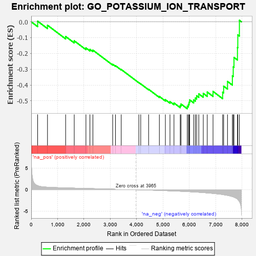
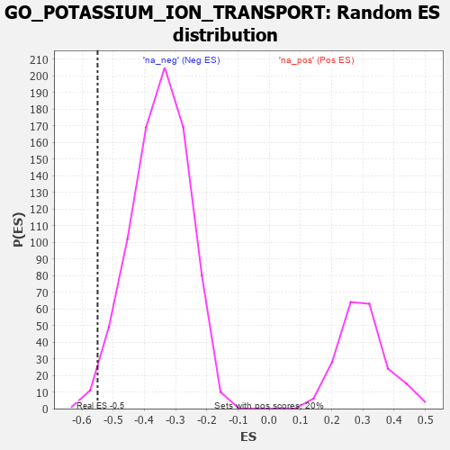

| | | Dataset | 7d |
| Phenotype | NoPhenotypeAvailable |
| Upregulated in class | na_neg |
| GeneSet | GO_POTASSIUM_ION_TRANSPORT |
| Enrichment Score (ES) | -0.54988915 |
| Normalized Enrichment Score (NES) | -1.5670629 |
| Nominal p-value | 0.011306533 |
| FDR q-value | 0.12286015 |
| FWER p-Value | 1.0 |
Table: GSEA Results Summary

Fig 1: Enrichment plot: GO_POTASSIUM_ION_TRANSPORT
Profile of the Running ES Score & Positions of GeneSet Members on the Rank Ordered List
| PROBE | GENE SYMBOL | GENE_TITLE | RANK IN GENE LIST | RANK METRIC SCORE | RUNNING ES | CORE ENRICHMENT | | 1 | NSF | | | 243 | 0.947 | 0.0038 | No |
| 2 | KCND2 | | | 617 | 0.590 | -0.0217 | No |
| 3 | KCNH7 | | | 1305 | 0.427 | -0.0928 | No |
| 4 | ABCB8 | | | 1631 | 0.369 | -0.1204 | No |
| 5 | KCNC2 | | | 2075 | 0.295 | -0.1655 | No |
| 6 | CDK2 | | | 2226 | 0.272 | -0.1745 | No |
| 7 | ANO6 | | | 2339 | 0.255 | -0.1793 | No |
| 8 | CHP1 | | | 3089 | 0.138 | -0.2687 | No |
| 9 | KCNN1 | | | 3196 | 0.123 | -0.2776 | No |
| 10 | KCNK1 | | | 3413 | 0.088 | -0.3017 | No |
| 11 | KCNT2 | | | 4081 | -0.021 | -0.3850 | No |
| 12 | WNK3 | | | 4153 | -0.034 | -0.3927 | No |
| 13 | KCNQ4 | | | 4452 | -0.085 | -0.4272 | No |
| 14 | DLG1 | | | 4860 | -0.169 | -0.4723 | No |
| 15 | DRD2 | | | 5088 | -0.221 | -0.4929 | No |
| 16 | PTEN | | | 5262 | -0.261 | -0.5052 | No |
| 17 | KCNC4 | | | 5414 | -0.298 | -0.5134 | No |
| 18 | WNK1 | | | 5650 | -0.362 | -0.5298 | No |
| 19 | CD63 | | | 5680 | -0.370 | -0.5200 | No |
| 20 | KCNQ1 | | | 5918 | -0.441 | -0.5339 | Yes |
| 21 | ACTN2 | | | 5960 | -0.458 | -0.5223 | Yes |
| 22 | KCNH6 | | | 5988 | -0.467 | -0.5088 | Yes |
| 23 | NETO2 | | | 6009 | -0.475 | -0.4940 | Yes |
| 24 | KCNQ5 | | | 6161 | -0.524 | -0.4940 | Yes |
| 25 | KCNH8 | | | 6225 | -0.545 | -0.4821 | Yes |
| 26 | STK39 | | | 6274 | -0.563 | -0.4677 | Yes |
| 27 | GALR2 | | | 6355 | -0.599 | -0.4560 | Yes |
| 28 | VAMP2 | | | 6525 | -0.672 | -0.4528 | Yes |
| 29 | DPP6 | | | 6676 | -0.751 | -0.4444 | Yes |
| 30 | HCN1 | | | 6895 | -0.865 | -0.4405 | Yes |
| 31 | HCN4 | | | 7260 | -1.134 | -0.4451 | Yes |
| 32 | ANK2 | | | 7298 | -1.170 | -0.4072 | Yes |
| 33 | KCNB1 | | | 7444 | -1.327 | -0.3772 | Yes |
| 34 | KCNN2 | | | 7629 | -1.611 | -0.3418 | Yes |
| 35 | HCN2 | | | 7662 | -1.668 | -0.2851 | Yes |
| 36 | ANK3 | | | 7690 | -1.740 | -0.2253 | Yes |
| 37 | PKD2 | | | 7822 | -2.167 | -0.1629 | Yes |
| 38 | KCNC1 | | | 7835 | -2.249 | -0.0826 | Yes |
| 39 | CAV3 | | | 7896 | -2.739 | 0.0095 | Yes |
Table: GSEA details [plain text format]

Fig 2: GO_POTASSIUM_ION_TRANSPORT: Random ES distribution
Gene set null distribution of ES for GO_POTASSIUM_ION_TRANSPORT